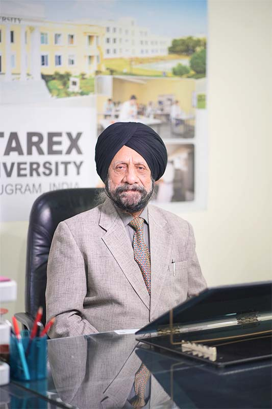

Dr. A.S. Bedi is a seasoned professional with an illustrious career spanning several decades across diverse industries. He began his journey at Taylor Instrument India Ltd. (IBM Inc. USA), serving in roles from Purchase Manager to General Manager over 20 years.
He later held leadership positions at Chip Computers and Graphic Systems Ltd., demonstrating strategic marketing and operational excellence. His transition into education saw him serve as Chief Administrator and Vice President at renowned schools in Delhi.
Known for his extensive social network and ability to build influential relationships, Dr. Bedi brings unmatched corporate, educational, and interpersonal expertise to Starex Foundation.
Dr. A.S. Bedi (D.Phil. in English Literature)
OSD cum Secretary to Chairman, Starex Foundation